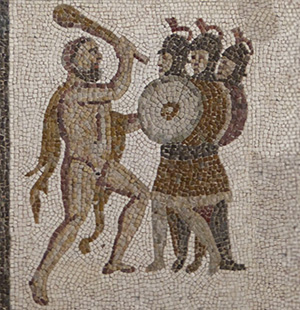

The Ceryneian Hind
How do you safely hunt Artemis' prized beast?

The Augean Stables
How do you clean a city-sized stable in a day?

The Cretan Bull
How do you take a rampaging bull off an island?



The Cattle of Geryon
How do you steal a herd of cattle from a giant?

Capturing Cerberus
How do you tame the guardian of the underworld?